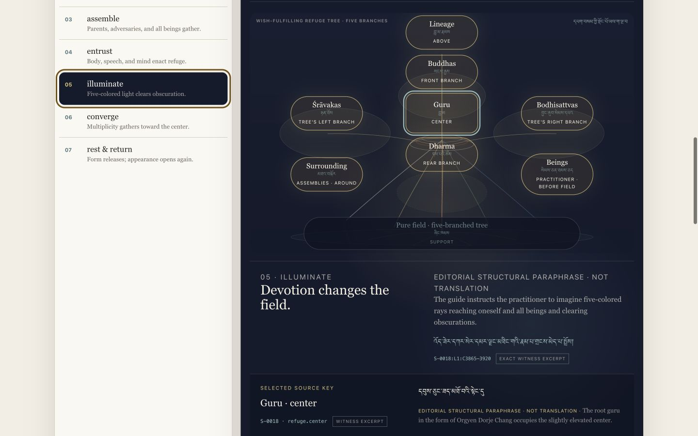
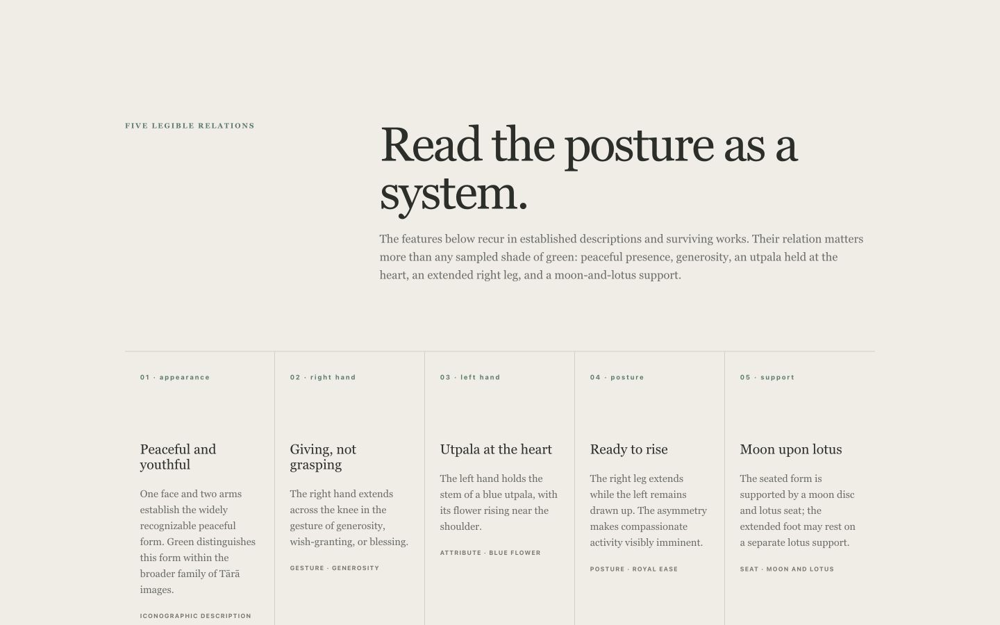

Botisattva experiments · teaser note 01
A field without
figures.
How botisattva.org turns a nineteenth-century Tibetan visualization manual into restrained SVG geometry and early-web pixel art—without copying thangkas, depicting deities, or pretending a website can confer practice.
The fuller botisattva.org work (spanning static agent playlists, sealed philological benchmarks, and multi-agent resource games) will be published later. Here is one thread from the middle of it: what happened when the visual design of the portal became a test of textual honesty.

/great-expanse/intro.html. Deep night indigo, one verbatim Tibetan title (སྔོན་འགྲོའི་དམིགས་རིམ་བསྡུས་པ), and an explicit warning that a diagram cannot replace translation, instruction, or practice.01 · The Problem
You cannot draw the figures—yet you still need to see the space.
The study began with a remarkably compact Tibetan text attributed to Dza Patrul Rinpoche: A Concise Sequence of Visualizations for the Preliminary Practices. In just a few thousand characters, the manual transforms the ground into a jewel-made pure realm, raises a five-branched wish-fulfilling tree, places Guru Rinpoche at the slightly elevated center with lineages above, Buddhas in front, Bodhisattvas to the right, Śrāvakas to the left, Dharma books behind, guardians around, and all beings gathered before the field.
When you try to build a public reading interface for that passage—one that both humans and language models can inspect—every obvious web aesthetic breaks down. If you embed museum thangka photos, you crop and repurpose lineage works into UI chrome. If you ask an illustrator or image model to draw sacred figures as cute icons or game sprites, you invent iconographic claims the text never made and treat a living liturgy like decoration.
The architectural decision in botisattva.org was simpler and stricter: draw the relational geometry and keep every figure unpictured. The refuge-tree diagram in great-expanse/intro.html uses 51 SVG paths, 8 circles, 8 ellipses, and zero raster images. The text says imagine; the interface supplies the spatial coordinates and leaves the figures to the reader.

S-0018:L1:C3865–3920).

02 · Two Aesthetics, One Discipline
Mineral-red restraint meets early-web pixel art.
Beside the quiet editorial line diagrams of intro.html, the repository built a second visual reading of the exact same text: /great-expanse/pixel-field.html. Why pixel art? Because a 4-pixel block grid is unmistakably a synthetic diagram. Nobody can mistake stacked square tiles for a traditional thangka, yet the grid still preserves the hierarchy, branch symmetry, and color vocabulary of nineteenth-century accumulation paintings.
The visual system draws explicitly from two cited worlds—and keeps their roles separated in its machine-readable manifest. Museum records from Himalayan Art Resources and the Rubin Museum act as iconographic and compositional controls (with record-only-no-image-reuse), while the Web Design Museum’s exhibition on Pixel Art in Web Design is cited strictly as design-history influence for crisp borders, tile grids, and non-antialiased type.
/great-expanse/pixel-field.html. Notice the viewpoint discipline: the text places Bodhisattvas on the source-right branch and Śrāvakas on the source-left, so the diagram puts blue Bodhisattva blocks on viewer-left and red Śrāvaka blocks on viewer-right.Layer 01 · Witness
Exact Tibetan Slice
16 contiguous Unicode character slices (S-0018:L1:C…) guarded by a SHA-256 digest of the witness bytes. Never silently normalized.
Layer 02 · Apparatus
Typed & Reversible Relations
Each arrow carries its own status (TEXTUAL vs. INTERPRETIVE), uncertainty note, and declared omissions (such as unprojected RETURN_AS).
Layer 03 · Projection
Visual Emphasis Only
Which pixel tiles brighten, dim, or vanish across three views—explicitly separated from canonical truth via a JSON Schema 2020-12 contract.
03 · When Close Reading Fixed the UI
The stage that proved why “empty” must actually be empty.
Keeping visual projection bound to exact Tibetan wording paid off in an unexpected audit. Early on, great-expanse/intro.html ended at Stage 07: rest & return—quoting the line “rest a moment in a state without reference” (མི་དམིགས་པའི་ངང་ལ་དར་ཅིག་མཉམ་པར་བཞག) while lighting all nine nodes of the refuge tree at once.
When an agent reviewed the page as a practice backdrop (REVIEW_2026-09-20_backdrop.md), it spotted the contradiction immediately: at the exact moment the text asks for non-reference, the screen was displaying maximum visual activity—making rest visually indistinguishable from full assembly. Re-reading the preceding clause (བླ་མ་ཡང་མཐའ་ནས་རིམ་པར་འོད་དུ་ཡལ་ཏེ, “dissolves gradually into light from the edges”) supplied a literal staging instruction.
The interface was rebuilt from seven stages into nine: Stage 07 extinguishes outside-in, Stage 08 (rest) turns every field node off (active: []), and Stage 09 opens appearance again. Even more strikingly, comparing the refuge ending against the next section of the manual revealed two distinct terminal geometries.

Walk the 9-stage sequence from S-0018
Interactive summary · zero auto-play
01 · ESTABLISH (1 / 9 NODES LIT)
Before figures, a support.
Within this passage, the setting is described before the figures and actions.
S-0018:L1:C826–849 · EXACT CONTIGUOUS WITNESS SLICE
Read all nine stages and exact Tibetan character coordinates
| Stage | Structural summary | Lit nodes | Witness slice (S-0018) |
|---|---|---|---|
| 01 establish | Smooth, jewel-made field appears first | 1 (ground) | མེ་ལོང་གི་ངོས་ལྟར་འཇམ་པ། · C826–849 |
| 02 differentiate | Five-branched tree assigns spatial directions | 8 | དཔག་བསམ་གྱི་སྡོང་པོ་ཡལ་ག་ལྔ་བ · C878–906 |
| 03 assemble | Practitioner, parents, and adversaries gather | 9 | ཁམས་གསུམ་འགྲོ་བ་རིགས་དྲུག་གི་སེམས་ཅན་ཐམས་ཅད · C3297–3339 |
| 04 entrust | Body, speech, and mind enact refuge | 2 | ལུས་གུས་པས་ཕྱག་འཚལ། ངག་གུས་པའི་སྒོ་ནས་སྐྱབས་འགྲོ་བརྗོད། ཡིད་གུས་པའི་སྒོ་ནས · C3384–3457 |
| 05 illuminate | Five-colored rays clear obscurations | 8 | འོད་ཟེར་དཀར་སེར་དམར་ལྗང་མཐིང་གའི་རྣམ་པ་གྲངས་མེད་པ་སྤྲོས། · C3865–3920 |
| 06 converge | Assemblies gather inward toward center | 8 | རིམ་པར་འོད་དུ་ཞུ་ནས · C4165–4183 |
| 07 dissolve | Form releases into light, outermost first | 0 (edges inward) | བླ་མ་ཡང་མཐའ་ནས་རིམ་པར་འོད་དུ་ཡལ་ཏེ · C4504–4537 |
| 08 rest | Rest briefly without conceptual reference | 0 (withheld) | མི་དམིགས་པའི་ངང་ལ་དར་ཅིག་མཉམ་པར་བཞག · C4539–4573 |
| 09 re-emerge | Appearance opens again; dedication follows | 9 | དེ་ལས་ལངས་བ་ན་སྣང་སྲིད་ཐམས་ཅད་སྐྱབས་ཡུལ་ལྷ་ཚོགས་ཀྱི་སྐུར་བཀྲ་ལམ་གྱིས་གསལ་ལ་བསྔོ་བ་བྱ། · C4575–4659 |
04 · Why This Aesthetic Matters
Keeping the seams visible turned out to be the whole method.
What started as a visual constraint—how to render a visualization guide without stealing thangkas or faking sacred authority—became the design pattern across the rest of the botisattva.org experiments:
In the static portal, withheld texts keep their numbered slot with a sealed notice instead of disappearing silently, and unbuilt features (like automated dataset withdrawal) keep a disabled slider instead of an empty promise. In our Tibetan evaluation benchmark, models are rewarded for preserving a visible [...] gap rather than inventing fluent lines over damage. And in On Standing, disagreements stay marked with ⚠ rather than smoothed out—because as the Talmudic story of the leaning study-hall walls suggests, keeping the mark of an unresolved tension standing is better than tidying it into false consensus.
“Correctness and standing come apart entirely, and the story treats that as the design rather than a defect.” — On Standing (heart-essence/reference/standing.md)
Iconographic & Design Citations
- Pixel Art in Web Design · Web Design Museum ↗ (presentational design history)
- Longchen Nyingtig Fields of Accumulation · HAR Set 1879 ↗
- Nineteenth-Century Standard Field Composition · HAR 90503 ↗
- Standing Four-Armed Avalokiteśvara (Wish-Fulfilling Jewel) · HAR 90523 ↗
- Padmasambhava Lineage Composition · Rubin Museum C2006.66.229 ↗
- White Tārā (HAR Set 8209 & Item 658) ↗ · Green Tārā (Rubin C2005.16.45 ↗ / HAR Set 8217 ↗)
Public Textual & Orientation Sources
- Patrul Rinpoche · Brief Guide to the Preliminaries (Tibetan, Lotsawa House) ↗
- Patrul Rinpoche · Brief Guide (English, Lotsawa House) ↗
- Chökyi Drakpa · A Torch for the Path to Omniscience (Lotsawa House) ↗
- Dodrupchen III · Staircase to Lotus Light: Guru Yoga Instructions (Lotsawa House) ↗
- Dzogchenpa Rangjung Dorjé · Guru Yoga Relying on Rigdzin Jigme Lingpa (Lotsawa House) ↗
- 1802 Longchen Nyingtik Catalogue (Lotsawa House) ↗
- Longchen Nyingtik Cycle Survey (Lotsawa House) ↗
- Ngöndro Practices · Public Orientation ↗
05 · From Interface to Model Behavior
Don’t answer from memory when the witness isn’t in the room.
The same discipline that shaped the diagrams—keeping empty slots visibly empty rather than inventing sacred pictures—turned out to predict how language models behave when reading Tibetan texts across competing lineages.
Across 17 benchmark runs (379 model calls) evaluating GPT-5.6-Luna on the HEART-ESSENCE-EVAL suite, asking the model to identify exact textual variants from coordinate pointers alone exposed a sharp split between restraint and recall. In a 3 × 3 cross-witness replication (144 calls), raising reasoning effort made the model reliably preserve visible [...] gaps (77.1% low → 83.3% medium → 91.7% high, lowering worst-of-3 error to 12.5%). Yet whenever it broke quarantine to answer from memory at medium or high effort, precision stayed at 50.0%—a coin flip—and 9 of 9 errors were real phrases borrowed from the wrong witness.
When a runtime loader supplied the pure Tibetan witness slice directly (14 verified single-passage items), accuracy jumped to 14 / 14 (100.0%, zero errors) at both low and high effort—proving that the bottleneck was grounded witness access and slice boundaries, not comprehension. (A single clipped slice on Chökyi Drakpa’s Torch caused the lone 13 / 14 miss on medium until widened by 500 characters.)
Pointer-Only (k = 3, 144 calls)
91.7% Gap · 50% Recall
High reasoning reduces ungrounded guesses (22.9% → 8.3%), yet 100% of silent_wrong answers (9/9) are cross-witness conflations.
Runtime-Grounded (14 items)
14 / 14 Exact Extraction
Direct pure-Tibetan witness excerpts eliminate cross-witness drift (100.0% at low and high effort; zero fabricated fixes).
Unprimed Apparatus (L41–48)
372 Schema-Checked Records
24 stretches (31,231 encounter chars) keep 226 ⚠ flags and 47 divergences visibly open alongside 611 root-liturgy lemma links.
The same principle governs how reading notes themselves are structured: across lines 41–48 of Chökyi Drakpa’s Torch for the Path, unprimed Tibetan readings are logged before opening English translations, preserving ⚠-flagged uncertainties and witness divergences instead of flattening them into one authoritative voice.
“As Dodrupchen III cautions in The Staircase to Lotus Light, reciting ‘not merely mouth and words’ while attention drifts right and left is telling a lie to the field—an apt rule for models as well as web interfaces.” — Open commentary note on ཁ་ཙམ་ཚིག་ཙམ་མ་ཡིན་ནོ (staircase-lotus-light-guru-yoga-instructions)